Editorial Board
The International Journal of Ayurveda is guided by a distinguished editorial board comprising leading experts in Ayurvedic medicine, research, and allied health sciences from around the world. We are currently constituting our editorial board and welcome expressions of interest from qualified scholars and clinicians.
Editor-in-Chief

Dr. Aakash Kembhavi
MD (Ayu-Shalya), PGDMLS, MS (Counseling & Psychotherapy)
Academician, Clinician & Researcher
Contact: editor@internationaljournalofayurveda.org
Phone: +91 9886759499
Office Address: 1 F C, Om Annexe, Shirur Park Main Road, Prashant Colony, Vidyanagar, Hubli - 580031, Karnataka, India
Dr. Aakash Kembhavi leads the International Journal of Ayurveda with a vision to bridge traditional Ayurvedic wisdom with contemporary scientific research methodologies. Under his editorial leadership, the journal is committed to the highest standards of academic integrity, COPE-compliant publication ethics, and rigorous double-blind peer review.
Associate Editors
The following positions are currently open. We invite qualified scholars and clinicians with postgraduate credentials (MD Ayu / PhD or equivalent) to express their interest.
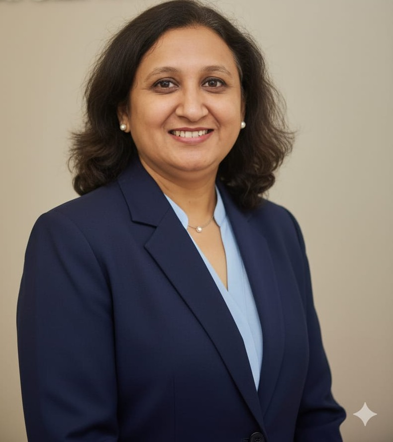
Associate Editor — Clinical Research
Dr. Suprabha Hegde
MS (Shalya Tantra), BAMS, PG Diploma in Clinical Research | Lead – Research, Apollo AyurVAID Hospitals, Bangalore
Dr. Hegde leads research at Apollo AyurVAID Hospitals, Bangalore, managing end-to-end clinical trials in integrative Ayurvedic care, including Ministry of AYUSH-sponsored studies. With over 15 years of experience spanning clinical practice, herbal product development, and regulatory research, she has authored multiple peer-reviewed publications in Ayurveda and integrative medicine.

Associate Editor — Fundamental Sciences
Dr. Vrinda
MD (Rasashastra & Bhaishajya Kalpana), BAMS | Research Officer, Jayadev Memorial Rashtrotthana Hospital and Research Centre
Dr. Bhat holds an MD in Rasashastra and Bhaishajya Kalpana (Ayurvedic Pharmacology) and brings over eight years of research experience, including as Senior Research Fellow at the Central Ayurveda Research Institute under CCRAS, Ministry of AYUSH. Her work spans pharmaceutical standardization, phytochemical analysis, and clinical trials in diabetes management, with ten peer-reviewed publications.

Associate Editor — Traditional Knowledge & Classical Studies
Dr. Khalid B.M
MD (Ayu) Samhita and Sidhanta | Associate Professor, Spoorthi Ayurveda Medical College and Dr. S.V. Savadi Ayurvedic Hospital, Gangavathi, Karnataka
Dr. Khalid is Associate Professor of Samhita and Sidhanta and Chief Coordinator of the Avishkara Central Research Laboratory at SJG Ayurvedic Medical College & Hospital, Koppal, with seven years of research and postgraduate teaching experience. An RGUHS-approved research examiner, he has authored a textbook on Research Methodology and Biostatistics in Ayurveda alongside peer-reviewed work on validated clinical assessment scales.
Associate Editor — Integrative Medicine & Public Health
Position Open
Responsible for manuscripts on integrative medicine, modern-traditional synthesis, public health applications, and healthcare policy.
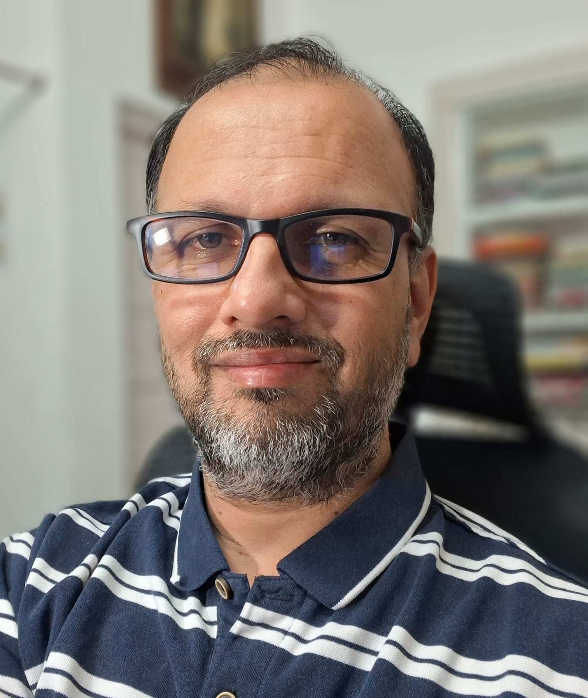
Associate Editor — Research Integrity & Epistemology
Prof. Kishor Patwardhan
BAMS, MD (Kriya Sharir), PhD | Professor of Kriya Sharir, Faculty of Ayurveda, Institute of Medical Sciences, Banaras Hindu University
Prof. Patwardhan has taught Ayurveda physiology (Kriya Sharir) at BHU since 2004 and holds a PhD examining the state of Ayurvedic education across 32 institutions in 18 states. His recent work traces a distinctive arc in critical Ayurveda scholarship: a widely discussed re-examination of his own earlier writing through the lens of falsifiability, empirical studies documenting inconsistent application of core theoretical constructs among senior physicians, and India's first published N-of-1 clinical trial of an Ayurvedic formulation. He has also co-authored cohort studies on vaccine safety following COVID-19 vaccination in India and authors clinicaltheory.org, a pedagogical project staging Socratic dialogues on classical Ayurvedic theory.
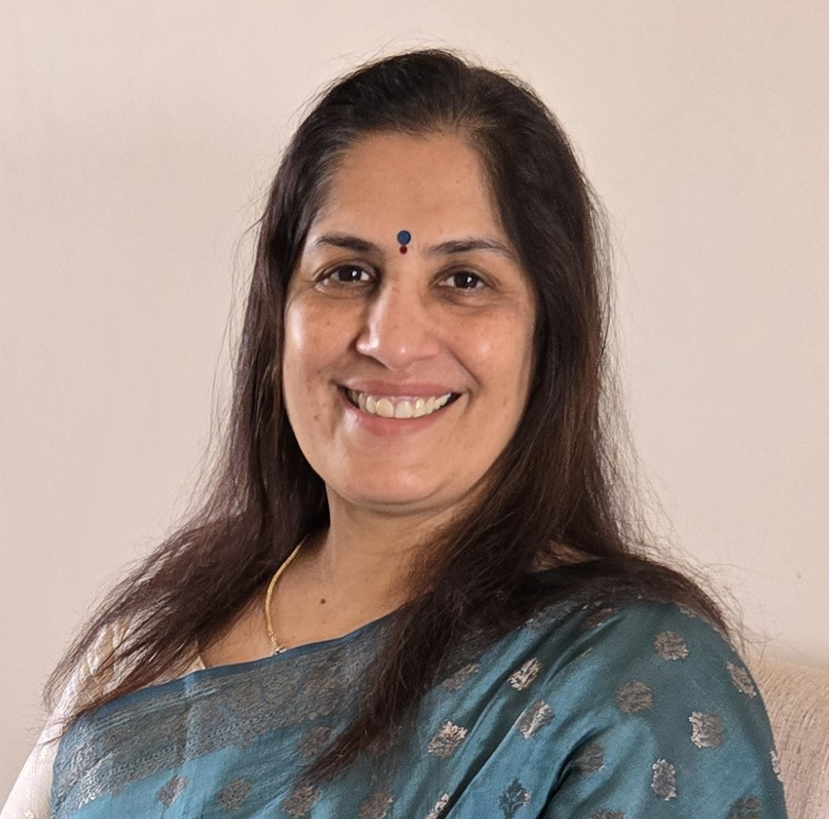
Associate Editor — Research Methodology & Publication Ethics
Prof. Asmita Wele
MD (Ayurveda) | Director Research & Professor, Dr. D. Y. Patil Vidyapeeth, Pune | Former Ayurveda Chair, University of Debrecen, Hungary
Prof. Wele is Director of Research and Professor at Dr. D. Y. Patil Vidyapeeth's College of Ayurved and Research Center, Pune, and Honorary Professor at the University of Debrecen, Hungary, where she completed a three-year tenure as Ayurveda Chair. With 35 years of experience designing and guiding research protocols, she authored the textbook Principles of Research Methods for Ayurveda and has taught Research Methodology and Medical Statistics to postgraduate students since 1999. She has published more than 60 research articles, serves as Associate Editor of the Journal of Ayurveda and Integrative Medicine, and is a member of the Pharmacopoeia Commission of Indian Medicine and Homoeopathy.
Section Editors
Section Editors manage specific thematic sections of the journal and coordinate with reviewers in their area of expertise.
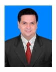
Section Editor — Panchakarma & Clinical Procedures
Dr. Rohit Mehta
BAMS, MD (Panchakarma), MBA (Hospital Administration), FAGE, Six Sigma Black Belt | Assistant Director, National Accreditation Board for Hospitals & Healthcare Providers (NABH), New Delhi
Dr. Mehta is Assistant Director at NABH, New Delhi, where he coordinates accreditation standards for Ayush and allopathic hospitals nationwide and has led national training and standards-drafting programmes for Panchakarma clinics. He holds an MD in Panchakarma and over a decade of clinical and administrative experience across Panchakarma centres in Rajasthan, Goa, and Himachal Pradesh. He has authored more than two dozen peer-reviewed papers and serves on the editorial boards of several international journals, alongside honorary affiliations with Ayurveda associations in North America and Europe.
Section Editor — Shalya & Shalakya Tantra
Position Open
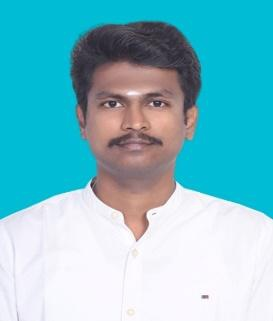
Section Editor — Dravyaguna & Rasashastra
Dr. K. Vairamuthu
BAMS, MA (Sanskrit), UGC-NET (Ayurveda Biology) | PhD Scholar, Heritage Science & Technology, Indian Institute of Technology, Hyderabad
Dr. Vairamuthu is a PhD scholar at IIT Hyderabad's Heritage Science and Technology department, with an MA in Sanskrit from SASTRA Deemed University and prior experience as Senior Research Fellow at the National Institute of Indian Medical Heritage (NIIMH-CCRAS), where he validated local health traditions and ethnomedicinal practices against classical Ayurvedic literature. His publication record spans reviews of classical drug formulations and dravya-focused literature, including work on Mākṣika Bhasma formulations and the therapeutic significance of Vikaṅkata, alongside a review on integrating traditional Ayurvedic principles with modern drug discovery techniques. He currently serves as a peer reviewer for five indexed journals, including as Editor & Reviewer at the Journal of Indian Medical Heritage, and brings combined strength in Sanskrit textual scholarship and pharmacological literature review to the section.
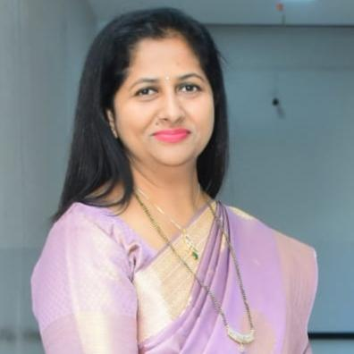
Section Editor — Prasuti Tantra & Stree Roga
Dr. Jeny Mukesh Bhatt
BAMS, MS (Prasuti Tantra & Stree Roga) | Associate Professor & Approved PG Teacher (MUHS), Dr. G. D. Pol Foundation's Y.M.T. Ayurvedic Medical College, Navi Mumbai
Dr. Bhatt is Associate Professor in the Department of Prasuti Tantra and Stree Roga at Y.M.T. Ayurvedic Medical College, Navi Mumbai, and an MUHS-approved postgraduate teacher and examiner. Her clinical and research focus spans infertility, PCOS, anovulation, and high-risk pregnancy, with 18 publications, a book chapter, a randomized controlled trial, and several national and university-level research awards including the MUHS Avishkar first prize. She brings twelve years of combined teaching and clinical research experience in evidence-based women's health to the journal.
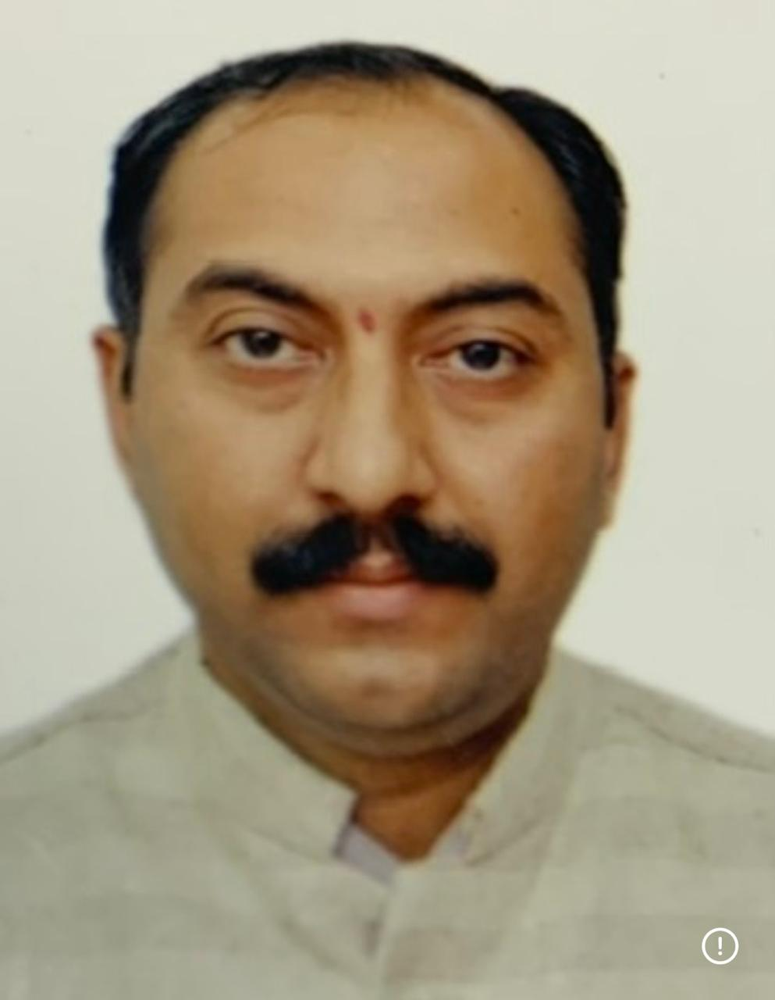
Section Editor — Swasthavritta & Yoga
Dr. Kiran Dattatraya Pandit
BAMS, MD (Swasthavritta & Yoga), DIH, CCPHS (PHFI) | Principal Assessor & Faculty, NABH-AYUSH, QCI, New Delhi
Dr. Pandit holds an MD in Swasthavritta and Yoga (Preventive and Social Medicine) and serves as Principal Assessor and Faculty for NABH-AYUSH at the Quality Council of India, alongside Lead Assessor roles at Rashtriya Ayurved Vidyapeeth and subject-expert positions with NCISM and AIIA under the Ministry of AYUSH. He is Principal Investigator on multiple CTRI-registered clinical trials and has led over 400 community health training programmes and 650 medical camps through his NGO, Gurukrupa Foundation, reflecting a career built around preventive medicine, public health, and quality standards in Ayurveda.

Section Editor — Ayurvedic Education & Institutional Policy
Dr. Madhumitha S
MD (Ayurveda) Samhita & Siddhanta, MSc Psychology, PhD Scholar | Ayurvedic Physician, Chennai
Dr. Madhumitha is an Ayurvedic physician and PhD scholar with over four years of clinical, academic, and research experience, including as Senior Research Fellow under CCRAS, Ministry of AYUSH. She has presented at fourteen national and international conferences and published on classical Ayurvedic literature and integrative oncology care.
Editorial Support
The Editorial Support team assists with manuscript compliance checks, reporting-guideline verification, and submission-readiness review ahead of peer review.
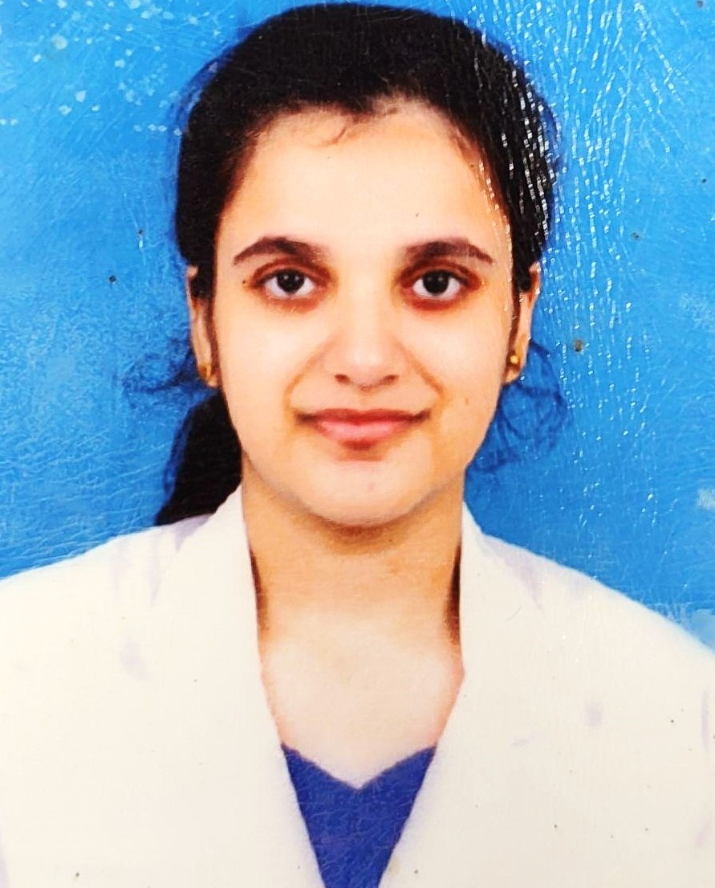
Manuscript Development & Compliance Editor
Dr. Shamsunisha Yusuff
BNYS | Scientific Editor & Research Writer — Systematic Reviews, Evidence Synthesis, Manuscript Development
Dr. Shamsunisha Yusuff is a Scientific Editor and Research Writer specialising in systematic reviews, evidence synthesis, and manuscript development for peer-reviewed publication. She currently provides freelance scientific editing support for a medical college affiliated with Arabian Gulf University, assisting with manuscripts prepared for journals including JEEHP, JMIR, PLOS ONE, and the BMC series, with a focus on structure, clarity, and adherence to reporting guidelines including PRISMA, STROBE, and COSMIN. She is ICH-GCP (E6 R2/R3) certified and has co-authored systematic reviews and meta-analyses published in the Journal of Family & Reproductive Health and the International Journal of Yoga. She holds a Bachelor of Naturopathy and Yogic Science from the Government Yoga & Naturopathy Medical College & Hospital, Chennai, and was recognised as Best Outgoing Student and Best Researcher (UG) by Tamil Nadu Dr. M.G.R. Medical University in 2025. At IJA, she supports manuscript compliance checks, reporting-guideline verification, and submission-readiness review ahead of peer review.
Statistical Editor
The Statistical Editor reviews the biostatistical and methodological soundness of submitted manuscripts.
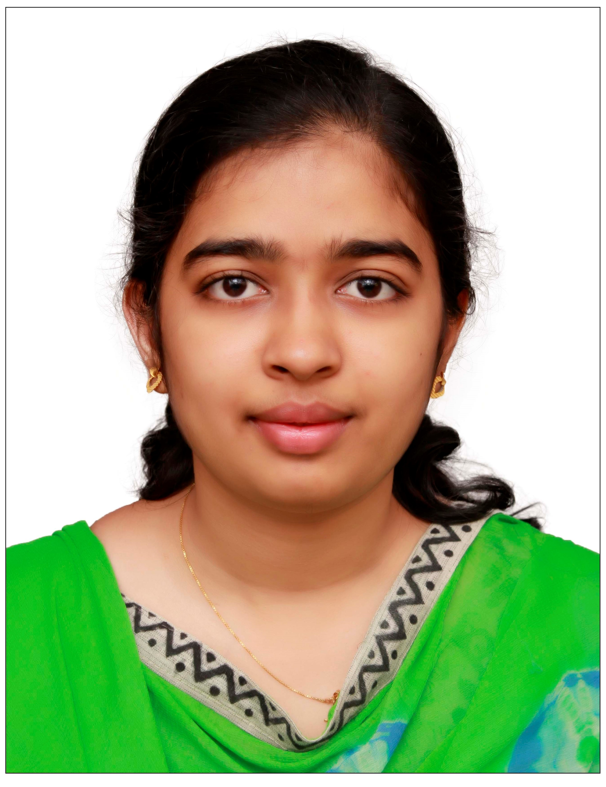
Statistical Editor
Feba Anna Varghese
M.Sc. (Biostatistics), B.Sc. (Mathematics) | Statistician, [Pharma Company], Bangalore; Former Biostatistician, National Institute of Mental Health and Neuro Sciences (NIMHANS), Bangalore
Feba Anna Varghese is a biostatistician with over eight years of experience in clinical and population-based research, currently serving as Statistician in the pharmaceutical industry, Bangalore. She previously spent more than four years as Biostatistician and Senior Research Fellow at the National Institute of Mental Health and Neuro Sciences (NIMHANS), Bangalore, where she contributed to major ICMR-funded studies establishing long-term population-based cohorts to estimate the national burden of dementia, validating the ICMR Neurocognitive Tool Box across five Indian languages for diagnostic use in linguistically diverse and illiterate populations, and deriving population norms for cognitive impairment diagnosis. She holds an M.Sc. in Biostatistics from Mahatma Gandhi University, where she graduated first in her class, and is proficient in SPSS, STATA, R, and SAS. She has co-authored more than ten peer-reviewed publications in journals including Frontiers in Neurology, Dementia, Dementia and Geriatric Cognitive Disorders, Neurological Sciences, and the Journal of the International Neuropsychological Society, spanning cognitive epidemiology, dementia diagnostics, and cross-cultural neuropsychological assessment.
International Advisory Board
The International Advisory Board provides strategic guidance, ensures global standards of excellence, and represents the journal's commitment to international scholarship in Ayurveda.
Advisory Board Positions Open
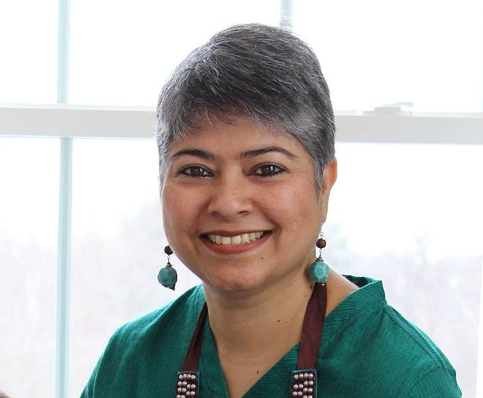
Senior Advisor — North America
Dr. Pratibha Shah
BAMS, MD (Ayurveda), MPH | CEO, My Ayurved LLC; Founder-President, Global Council for Ayurveda Research (USA)
Dr. Shah has practised Ayurveda for over 30 years across India and the United States and holds an MPH in International Health from Boston University. She served as Chief Medical Officer at India's AYUSH Ministry from 2003 to 2004 following twelve years at the Central Government Health Scheme, and later held leadership roles with the National Ayurvedic Medical Association and the Association of Ayurvedic Professionals of North America, including a term as the latter's Vice President. A WHO Fellow and former editor of Light on Ayurveda Journal, she was invited to present on Ayurveda at the White House in 2011 and has represented the field at international platforms including the World Health Congress and the World Ayurveda Congress.
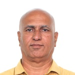
Senior Advisor — Europe
Dr. Venkata Narayana Joshi
BAMS, MD, PhD (Dravyaguna), Gujarat Ayurveda University | Director, Association of Ayurveda Academy (UK); International Expert, Multi-Disciplinary Advisory Committee, NCISM
Dr. Joshi has practised and taught Ayurveda across the UK and Europe since 2001, having held faculty positions at Middlesex University, Thames Valley University, and the College of Ayurveda UK, and currently directs the Association of Ayurveda Academy (UK) and teaches at the Europe Ayurveda Academy across Germany, France, Austria, and Croatia. He holds an MD and PhD in Dravyaguna from Gujarat Ayurveda University, serves as an international expert on NCISM's Multi-Disciplinary Advisory Committee, and is a Board Member of the British Ayurvedic Medical Council. His publications include work in the British Journal of Psychiatry (PMC-indexed) and international presentations spanning the World Ayurveda Congress, the European Parliament, and multiple global Ayurveda conferences.
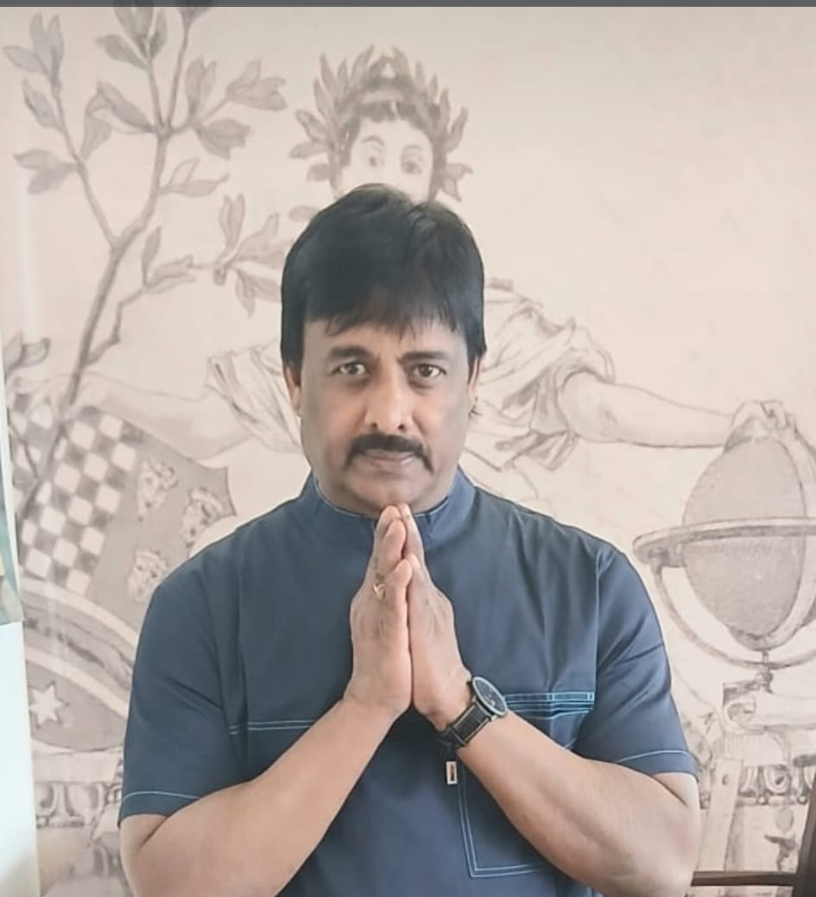
Senior Advisor — UK & Europe
Dr. Sureshswarnapuri
BAMS, MD (Ayurveda), FBAA, RAS | President, Association Europe Ayurveda Academy (France); Executive Director, Association Ayurveda Academy (UK); President, Croatian Ayurveda Institute; Director, OM Ayurveda (Ukraine)
Dr. Sureshswarnapuri has practised and taught Ayurveda across the UK and continental Europe for over two decades, holding leadership roles concurrently across the Association Europe Ayurveda Academy (France), the Association Ayurveda Academy (UK), the Croatian Ayurveda Institute, and OM Ayurveda (Ukraine). Since 2000 he has provided continuous Ayurvedic consultation across the Netherlands, Germany, France, Turkey, Ukraine, Croatia, Estonia, Lebanon, Russia, Ireland, and Serbia, following earlier positions at the Maharishi International Foundation (Netherlands) and as lecturer and consultant physician at the Indian Institute of Ayurvedic Medicine and Research (1998–2000). He is a recipient of the International Atreya Award for Excellence in Ayurveda Practice (AAPNA, Boston, 2011) and the Charaka International Award for Teaching in Ayurveda (AAPNA, Las Vegas, 2013), and was awarded Fellowship of the British Ayurveda Academy (FBAA) in London in 2022. He has organised Ayurveda conferences and Nadi Pareeksha training programmes across the UK and Europe in collaboration with Indian ambassadors and high commissioners to the UK, France, Ireland, Croatia, Slovenia, Ukraine, and Denmark, and represented the field at the European Parliament in Brussels (January 2024).
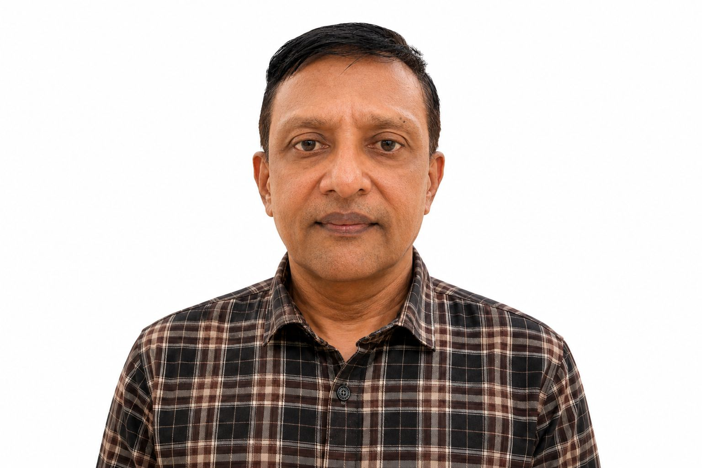
Senior Advisor — Asia Pacific
Dr. Rammanohar Puthiyedath
BAMS, MD | Professor, Department of Dravyaguna Vigyana & Research Director, School of Ayurveda, Amrita Vishwa Vidyapeetham, Amritapuri
Dr. Rammanohar Puthiyedath is Professor of Dravyaguna and Research Director at Amrita School of Ayurveda, with over 35 years of contribution to Ayurvedic research through scholarly publications, funded research projects, and academic leadership. He currently serves as a Part-Time Member of the National Commission for Indian System of Medicine and as Research Advisor to the Indian National Science Academy. He was co-author and Principal Investigator on the Indian side of an NIH-funded collaborative study published in the Journal of Clinical Rheumatology and the Annals of the Rheumatic Diseases, which received the Excellence in Integrative Medicine Research Award from the European Society of Integrative Medicine in 2012. He has served as Investigator on more than 20 major funded research projects and undertaken academic and research visits across the United States, United Kingdom, Canada, and numerous countries across Europe, Latin America, and Asia. His honors include the Outstanding Academic Contribution Award from Southern California University of Health Sciences and the Ayurveda Ratna Award (2025), the Raghavan Thirumulpad Award (2024), the Ayurveda Ratan Award from the All-Party Parliamentary Group on Indian Traditional Sciences and the Dhanvantari Award (2022), the Dr. Keshav Baliram Hedgewar Healing Honor (2021), and the Dr. C. Dwarakanath Memorial Award from IASTAM (2017), among others. His research interests include clinical research, network pharmacology, and whole medical systems research. Full profile at Amrita Vishwa Vidyapeetham.
Senior Advisor — Middle East & Africa
Position Open
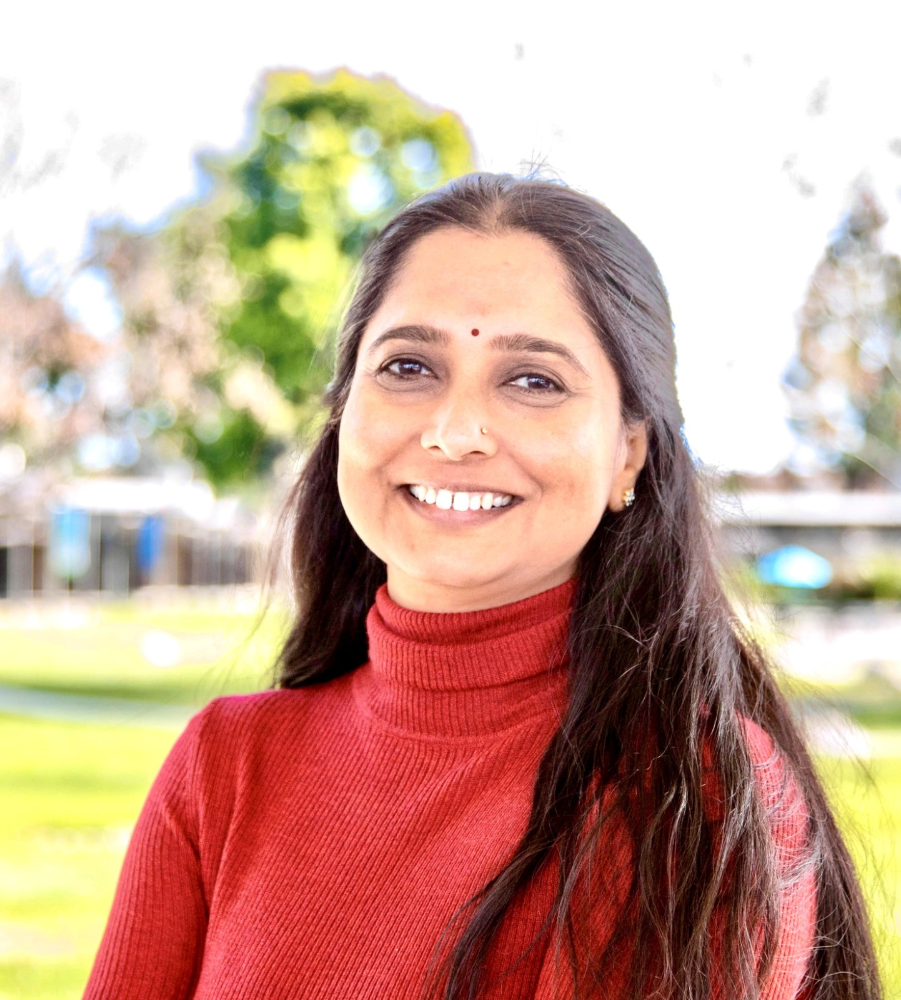
Senior Advisor — Clinical Research
Dr. Anupama Kizhakkeveettil
BAMS, MAOM, Ph.D. (Public Health) | Professor & Founding Program Director, Ayurveda Medicine Department, Southern California University of Health Sciences
Dr. Anupama Kizhakkeveettil is Professor and Founding Program Director of the Ayurveda Medicine Department at Southern California University of Health Sciences (SCUHS), where she has taught since 2007. She holds a Doctorate in Public Health from Walden University, and her research has been supported by multiple NIH grants, including as Co-Principal Investigator on R15-funded studies comparing spinal manipulation and prescription drug therapy for chronic low back and neck pain among older Medicare beneficiaries. She has authored more than 30 peer-reviewed publications spanning randomized controlled trials, systematic reviews, and case reports in Ayurveda and integrative medicine, and has contributed to WHO initiatives including the Benchmarks for Training and Practice in Ayurveda and Panchakarma (Jamnagar, 2019), the WHO Standard Terminology in Ayurvedic Medicine (peer reviewer, 2020), and the WHO ICD-11 Traditional Medicine Beta Draft (reviewer, 2023). She serves on the Boards of Directors of the National Ayurvedic Medical Association and the California Association of Ayurvedic Medicine, chairs the American Public Health Association's Integrative, Complementary and Traditional Health Practice Section, and is International Delegate Assembly Chair for the Dubai AYUSH Conference 2026.

Senior Advisor — Pharmacology & Drug Development
Dr. Sathyanarayana B
MD (Ayurveda) — Bhaishajya Kalpana | Principal, Medical Superintendent & Director R&D, Muniyal Institute of Ayurveda Medical Sciences, Manipal
Dr. Sathyanarayana is Principal, Medical Superintendent, and Director of Research & Development at Muniyal Institute of Ayurveda Medical Sciences, Manipal, with 25 years of experience in Ayurvedic pharmaceutics. He has published over 25 research papers, serves on the Ayurveda subcommittee of the Pharmacopoeia Commission for Indian Medicine, and chairs the PG Syllabus Committee for Rasashastra and Bhaishajya Kalpana at NCISM.
Senior Advisor — Traditional Knowledge Systems
Position Open
Editorial Responsibilities
Manuscript Review
All editorial board members participate in the initial screening and quality assessment of submitted manuscripts within their area of expertise.
Peer Review Oversight
Associate and Section Editors manage the peer review process, selecting appropriate reviewers and ensuring timely, constructive reviews.
Quality Assurance
Editorial board members ensure all published articles meet the journal's standards for scientific rigour, methodological soundness, and academic integrity.
Strategic Direction
Board members contribute to journal policy, special issue planning, and the long-term development of the journal's scope and reputation.
Express Your Interest
If you are interested in joining the editorial board, please write to us with your CV and a brief statement of your area of expertise and interest.
Email: editor@internationaljournalofayurveda.org
Editorial Office: +91 9886759499
Mailing Address: 1 F C, Om Annexe, Shirur Park Main Road, Prashant Colony, Vidyanagar, Hubli - 580031, Karnataka, India